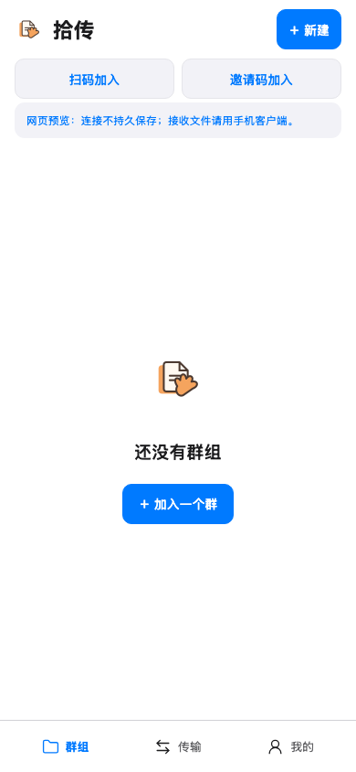
首次打开
无群组的正式应用空态 · 390×844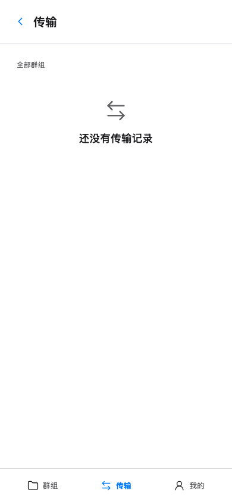
传输
全群真实传输队列空态 · 390×844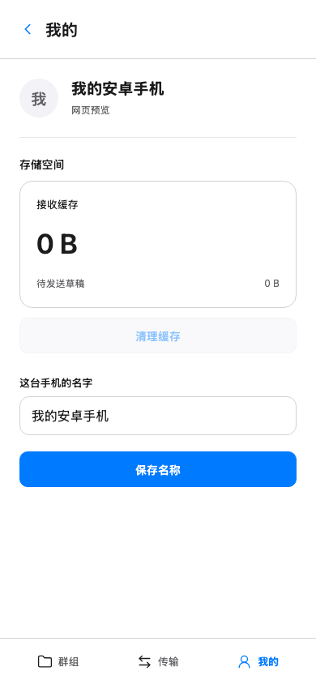
我的与缓存
设备名称与原生缓存入口，浏览器清理被禁用 · 390×844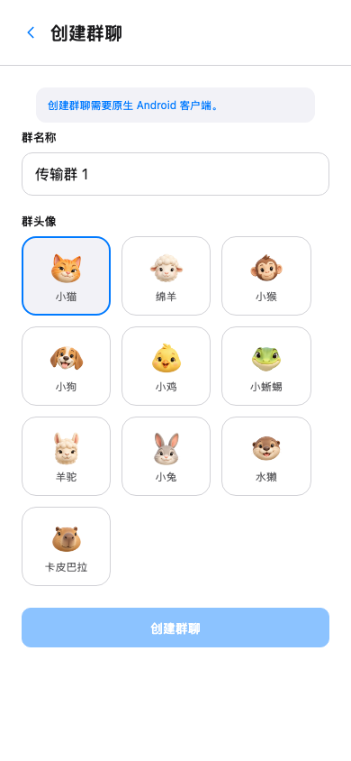
新建群组
正式创建面板与动物选择 · 390×844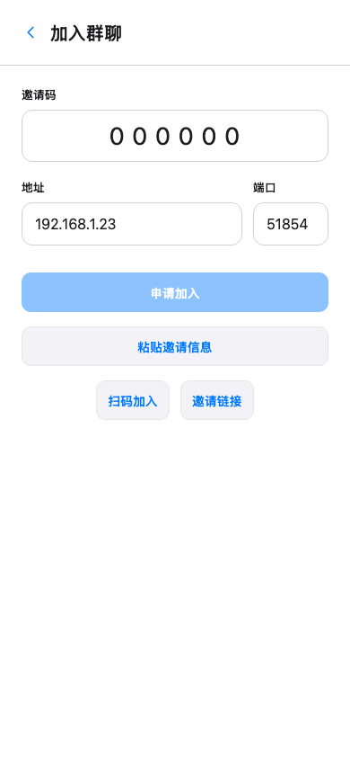
邀请码加入
真实地址、端口和邀请码表单 · 390×844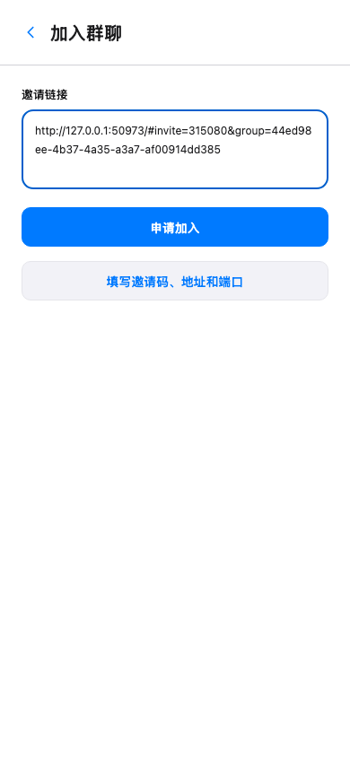
邀请链接加入
填写测试服务端的真实邀请链接 · 390×844等待允许
服务端记录待处理配对申请 · 390×844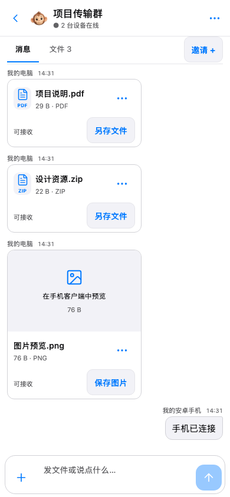
群消息
真实文本与 PDF、ZIP、图片消息 · 390×844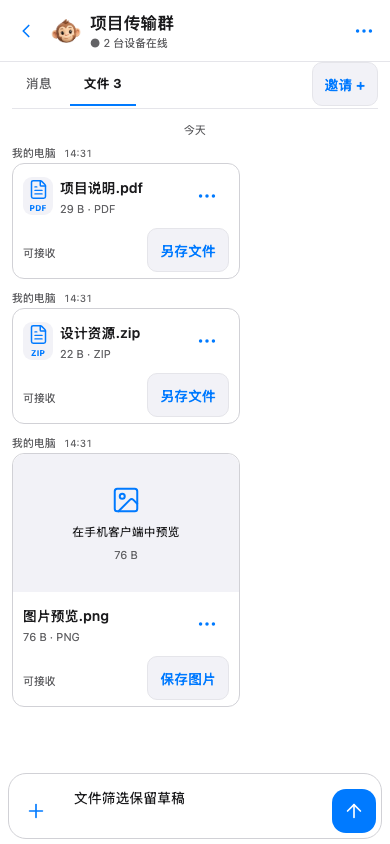
文件页签
筛选真实 3 个文件，保留未发送文字 · 390×844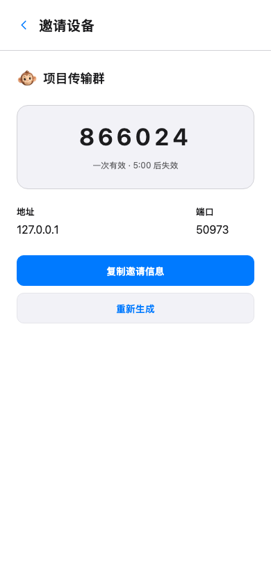
邀请设备
服务端生成的邀请码与实际地址 · 390×844图片操作
相册、文件和分享入口；原生操作未执行 · 390×844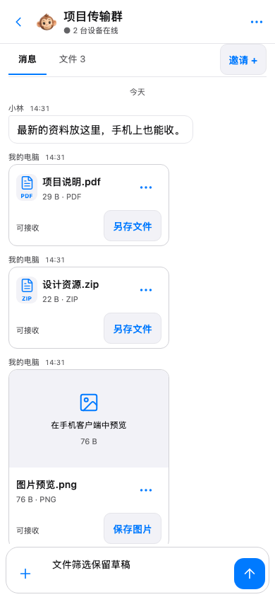
文件操作
PDF 操作不提供相册保存 · 390×844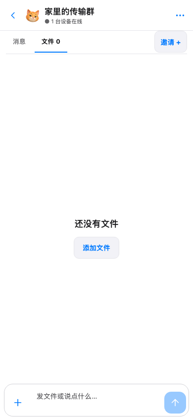
文件空态
第二个群只有文字消息，没有文件 · 390×844我的群组
两个已配对群的真实消息摘要 · 390×844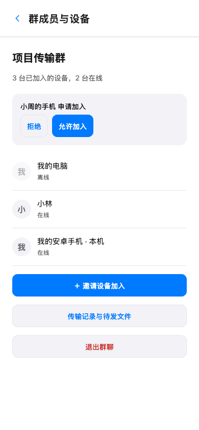
设备与加入申请
服务端真实待审批设备 · 390×844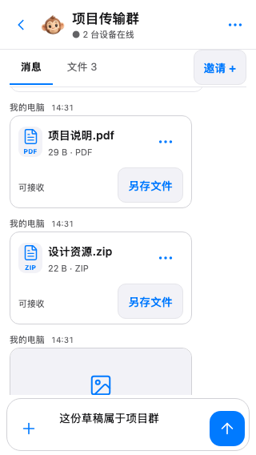
窄屏会话
320px 输入区可见且无横向溢出 · 320×568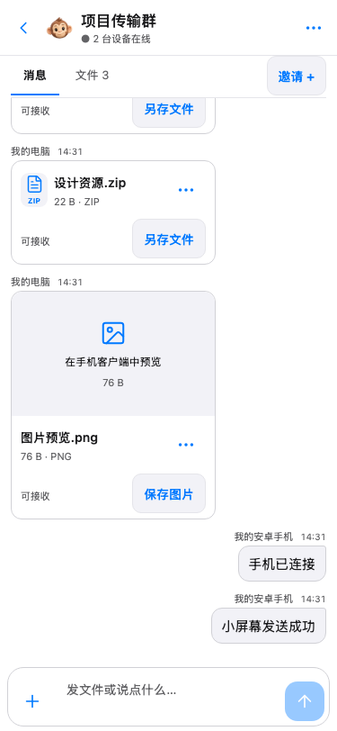
375px 会话
同一真实会话，验证左右对话与输入区 · 375×812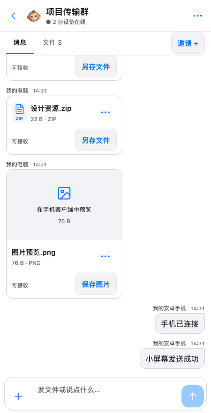
414px 会话
同一真实会话，验证左右对话与输入区 · 414×812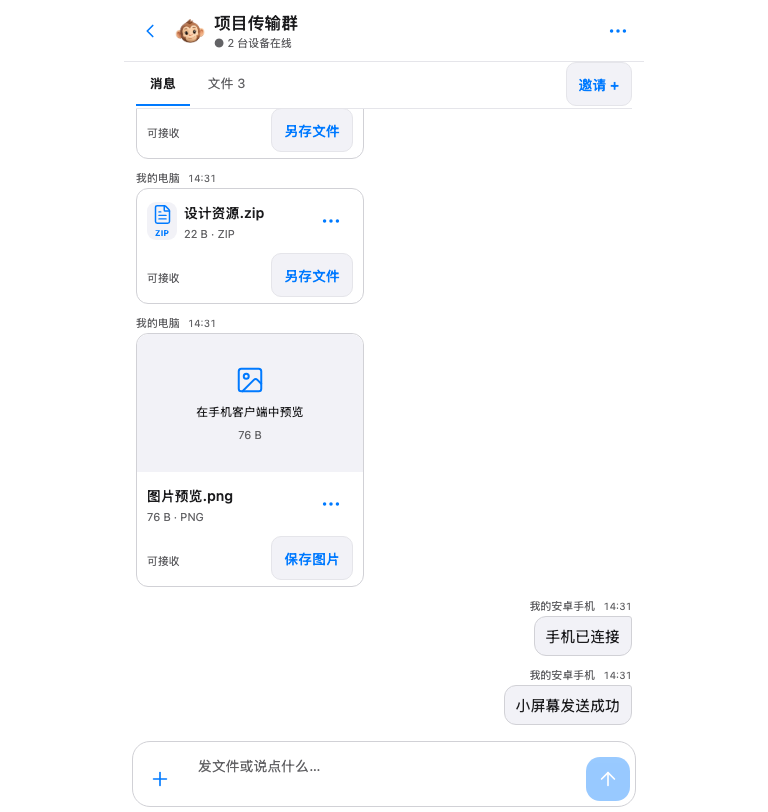